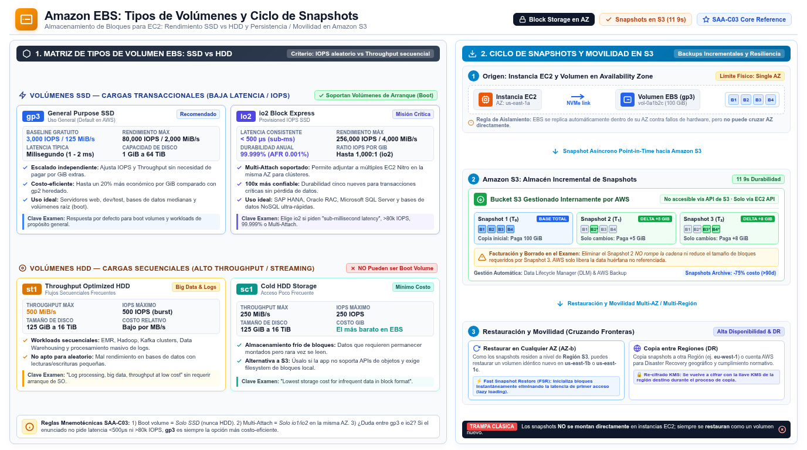

EBS: volúmenes y snapshots Amazon Elastic Block Store
El disco de bloques de EC2: qué tipo de volumen montas y cómo lo respaldas — la combinación perfecta de performance (D3) y costo (D4) en una sola pregunta.
Amazon EBS es el almacenamiento de bloques de EC2: volúmenes que se adjuntan a una instancia y se usan como un disco local — formateables, montables, con tabla de particiones. La distinción que el examen espera que tengas clara a esta altura: EBS es block storage (un disco para una instancia, con latencia de milisegundos y IOPS garantizables), mientras S3 es object storage y EFS es file storage compartido. Piensa en EBS como el disco duro externo del servidor: se puede desmontar de una instancia y volver a montarlo en otra, pero vive atado a una Availability Zone concreta — para mover datos entre AZ o regiones se usan snapshots.
La anatomía que importa: un volumen EBS se replica automáticamente entre servidores dentro de su AZ para protegerte del fallo de un componente; el EC2 y el EBS deben estar en la misma AZ para adjuntarse; y puedes modificar tamaño y rendimiento en caliente (Elastic Volumes) sin detener la instancia. Los dos objetos que gestiona el servicio son los volúmenes y los snapshots (backups point-in-time que persisten independientemente del volumen). Elegir bien el tipo de volumen y automatizar sus backups son las dos decisiones que caen en el examen.

Tipos de volumen: SSD para IOPS, HDD para throughput
La primera bifurcación del árbol de decisión es oficial: los volúmenes SSD son para workloads transaccionales (muchas lecturas/escrituras pequeñas, donde manda el IOPS) y los HDD para workloads de streaming grande (donde manda el throughput a menor precio). La segunda bifurcación es de presupuesto: gp3 es el tipo por defecto para casi todo — transaccional, escritorios virtuales, bases de datos medianas de una sola instancia, volúmenes de arranque y dev/test — mientras que io2 Block Express es la respuesta cuando el enunciado exige latencia sub-milisegundo sostenida, más de 16,000 IOPS o misión crítica con 99.999% de durabilidad.
| Tipo | Categoría | IOPS máx. | Throughput máx. | Tamaño | Use case oficial |
|---|---|---|---|---|---|
| gp3 | SSD general purpose | 80,000 | 2,000 MiB/s | 1 GiB – 64 TiB | Workloads transaccionales, VDI, DBs medianas de instancia única, apps interactivas de baja latencia, boot volumes, dev/test. |
| gp2 | SSD general purpose | 16,000 | 250 MiB/s | 1 GiB – 16 TiB | Los mismos que gp3; generación previa. gp3 es más barato y flexible — en el examen gp3 casi siempre desplaza a gp2. |
| io2 Block Express | SSD provisioned IOPS | 256,000 | 4,000 MiB/s | 4 GiB – 64 TiB | Latencia consistente sub-milisegundo (media < 500 µs), IOPS sostenidos, workloads que superan los 80,000 IOPS o 2,000 MiB/s. Durabilidad 99.999%. Multi-attach soportado. |
| io1 | SSD provisioned IOPS | 64,000 | 1,000 MiB/s | 4 GiB – 16 TiB | Bases de datos intensivas en I/O; soporta multi-attach pero con especificaciones menores que io2. |
| st1 | HDD throughput optimized | 500 | 500 MiB/s | 125 GiB – 16 TiB | Big data, data warehouses, procesamiento de logs. No puede ser boot volume. |
| sc1 | HDD cold | 250 | 250 MiB/s | 125 GiB – 16 TiB | Datos accedidos con poca frecuencia al menor costo de almacenamiento. No boot volume. |
Dos detalles de esta tabla que se convierten en pregunta. La cifra de IOPS de gp3 se alcanza con I/O de 25.6 KiB y la de io2 con I/O de 16 KiB — y las instancias deben ser EBS-optimized (Nitro lo es de serie) para exprimir el IOPS provisionado. Y el multi-attach — adjuntar un mismo volumen a varias instancias a la vez — solo existe en io1/io2: es la respuesta para clústeres de bases de datos que comparten almacenamiento en bloque, no en gp3 ni HDD.
Snapshots: backups incrementales que cruzan AZ y regiones
Un snapshot es una copia point-in-time de un volumen. Su propiedad estrella — repetida literalmente en el examen — es que es incremental: desde el snapshot más reciente solo se guardan los bloques que cambiaron. Eso lo hace rápido y barato, y tiene una consecuencia de facturación que se pregunta: borrar un snapshot no necesariamente reduce tu storage, porque los bloques que otros snapshots siguen referenciando se preservan; solo se elimina el dato referenciado en exclusiva por el snapshot borrado. Otro matiente: los snapshots viven en S3 pero en buckets gestionados por AWS — no los ves en la consola de S3 ni vía API de S3, solo vía EC2. Y su durabilidad viene dada por la replicación automática entre todas las AZ de la región, lo que permite restaurar un volumen nuevo en cualquier AZ de esa región (y, copiándolo, en otra región u otra cuenta).
La advertencia oficial más citada en preguntas de resiliencia: AWS no hace backups de EBS automáticamente — la responsabilidad de crear snapshots periódicos es tuya. Para cumplirlo sin scripts, la doc oficial señala dos gestores: AWS Backup y Amazon Data Lifecycle Manager (DLM), que automatizan creación, retención y borrado de snapshots (y de AMIs EBS-backed). Existe además EBS Snapshots Archive, un tier de bajo costo para archivar copias completas con retención de 90 días o más (compliance), y fast snapshot restore para evitar la latencia del primer acceso tras restaurar. Finalmente, Recycle Bin permite recuperar snapshots borrados por accidente.
bloques 1 2 3 4"] -- "snapshot 1
copia completa" --> S1["Snapshot 1
todos los bloques"] V2["Volumen EBS
bloque 2 cambió"] -- "snapshot 2
solo cambios" --> S2["Snapshot 2
solo bloque 2"] S3["Snapshot 3
solo bloques 3 4"] -.-> V2 classDef navy fill:#EFF6FF,stroke:#3B82F6,stroke-width:2px,color:#1E293B classDef green fill:#F0FDF4,stroke:#10B981,stroke-width:2px,color:#1E293B classDef amber fill:#FFF7ED,stroke:#F59E0B,stroke-width:2px,color:#1E293B class V,V2 green class S1 amber class S2,S3 navy
Cómo cae en el examen: señales y trampas
| Si el enunciado dice… | La respuesta apunta a… |
|---|---|
| "database requires sustained sub-millisecond latency and 64,000 IOPS" | io2 Block Express (provisioned IOPS SSD) |
| "cost-effective boot volume for a web server" | gp3 (general purpose SSD) |
| "log processing / big data on sequential reads, lowest cost" | st1 (o sc1 si los datos son fríos) |
| "move data to another AZ / Region / account" | EBS snapshot + copy + restore |
| "automate snapshot retention without scripts" | Data Lifecycle Manager o AWS Backup |
| "shared block storage across cluster nodes" | io2 con multi-attach |
| "encrypt volumes and snapshots with a customer key" | EBS encryption con KMS (cifra at-rest, in-transit a la instancia y snapshots derivados) |
- EBS = block storage atado a una AZ; S3 = objetos; EFS = archivos compartidos. No los mezcles en una respuesta.
- gp3 es el default (hasta 80,000 IOPS y 2,000 MiB/s); io2 Block Express para latencia sub-milisegundo, hasta 256,000 IOPS y 99.999% de durabilidad.
- st1 (big data, logs) y sc1 (datos fríos) optimizan throughput — ninguno es boot volume.
- Multi-attach solo en io1/io2: un volumen, varias instancias de un clúster.
- Los snapshots son incrementales, viven en S3 gestionado por AWS y se replican entre AZ de la región.
- Los backups de EBS no son automáticos: DLM o AWS Backup para automatizarlos.
- Borrar un snapshot no libera los bloques que otros snapshots referencian.
- El movimiento entre AZ/región/cuenta se hace con snapshot → restore / copy.
- CMP-10 Amazon EBS — What is Amazon Elastic Block Store? · docs.aws.amazon.com/ebs/latest/userguide/what-is-ebs.html
- CMP-11 Amazon EBS — Volume types (gp3, gp2, io2, io1, st1, sc1) · docs.aws.amazon.com/ebs/latest/userguide/ebs-volume-types.html
- CMP-12 Amazon EBS — Snapshots (incremental, cross-region, archive) · docs.aws.amazon.com/ebs/latest/userguide/ebs-snapshots.html